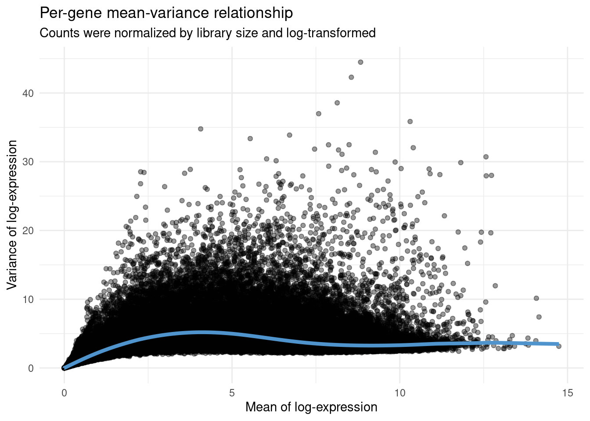
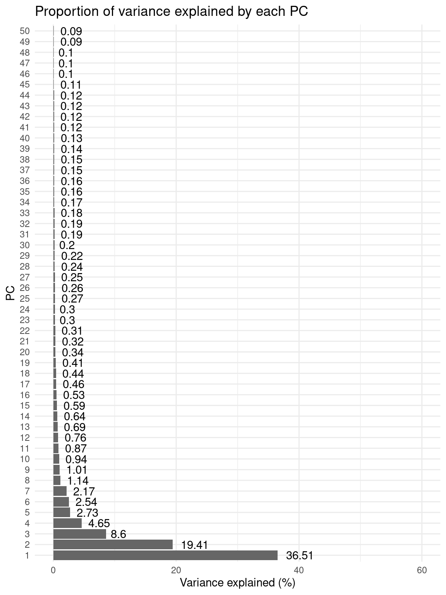
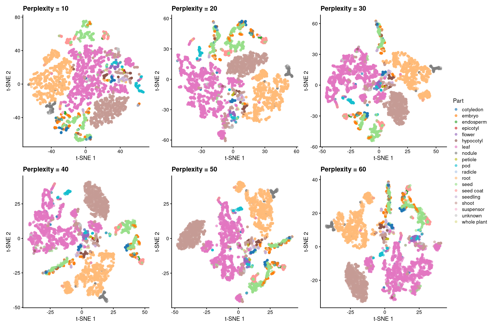
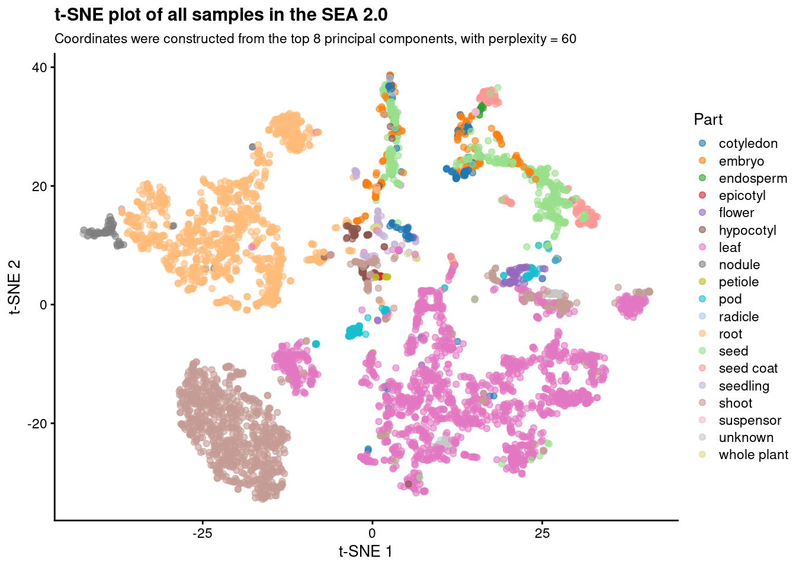
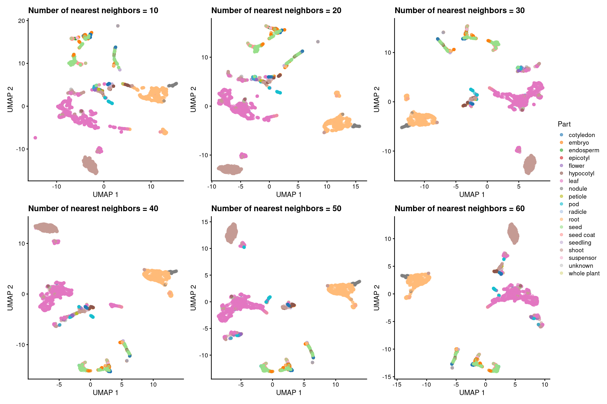
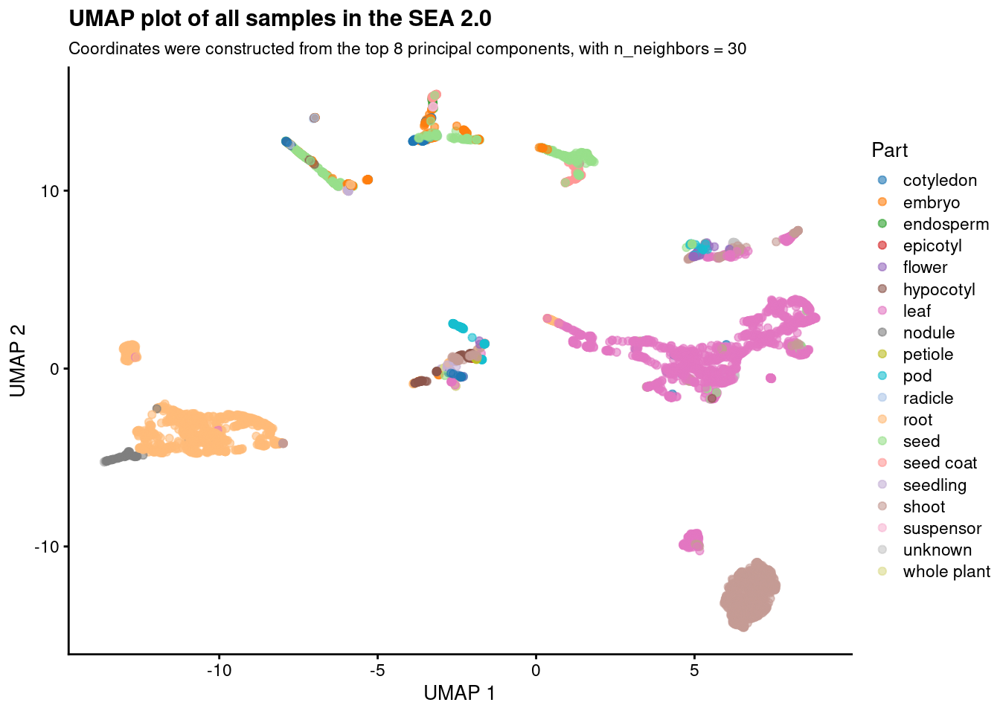

set.seed(123) # for reproducibility
# Load packages
library(here)
library(bears)
library(GenomicFeatures)
library(SummarizedExperiment)
library(SingleCellExperiment)
library(scater)
library(scran)
library(DESeq2)
library(tidyverse)
library(patchwork)
library(ggplot2)2 Analyzing quantitative data
Here, I will describe the code to:
- Read and parse quantitative data from salmon output files.
- Perform dimensionality reduction with UMAP and t-SNE.
First of all, let’s load required packages and data.
# Load data
load(here("data", "ds.rda"))
final_metadata <- read.csv(
here("products", "tables", "final_metadata_classified_atlas_v2.tsv"),
header = TRUE, sep = "\t"
) |>
dplyr::select(-c(Run, Experiment))2.1 From salmon quant.sf files to SummarizedExperiment
Here, we will obtain a SummarizedExperiment object containing gene-level transcript abundances in TPM and bias-corrected counts. Counts will be obtained using the “bias correction without an offset” method from the Bioconductor package tximport.
To create the SummarizedExperiment object, we will need a 2-column data frame of transcript-to-gene mapping. Let’s create it.
# Create a data frame of transcript-to-gene mapping
tx <- Biostrings::readDNAStringSet(
here("data", "gmax_transcriptome.fa.gz")
)
tx2gene <- data.frame(
TXNAME = gsub(" \\|.*", "", names(tx)),
GENEID = gsub(".*\\| ", "", names(tx))
)
save(
tx2gene, compress = "xz",
file = here("products", "result_files", "tx2gene.rda")
)Now, we can get the SummarizedExperiment object.
# Get gene-level transcript abundance estimates from salmon
## "Bias correction without an offset" method
se_atlas_gene <- salmon2se(
final_metadata,
level = "gene",
salmondir = ds$salmondir,
tx2gene = tx2gene
)
assay(se_atlas_gene, "gene_counts") <- round(
assay(se_atlas_gene, "gene_counts")
)
## "Original counts and offset" method
files <- file.path(ds$salmondir, final_metadata$BioSample, "quant.sf")
se_atlas_gene_offset <- tximport::tximport(
files, type = "salmon", tx2gene = tx2gene
)
colnames(se_atlas_gene_offset$abundance) <- final_metadata$BioSample
colnames(se_atlas_gene_offset$counts) <- final_metadata$BioSample
colnames(se_atlas_gene_offset$length) <- final_metadata$BioSample
# Get transcript-level transcript abundance estimates from salmon
se_atlas_transcript <- salmon2se(
final_metadata,
level = "transcript",
salmondir = ds$salmondir
)
# Save gene-level and transcript-level
save(
se_atlas_gene, compress = "xz",
file = here("products", "result_files", "se_atlas_gene.rda")
)
save(
se_atlas_gene_offset, compress = "xz",
file = here("products", "result_files", "se_atlas_gene_offset.rda")
)
save(
se_atlas_transcript, compress = "xz",
file = here("products", "result_files", "se_atlas_transcript.rda")
)
# Save final and complete sample metadata data frame
sample_metadata_complete <- as.data.frame(colData(se_atlas_gene))
save(
sample_metadata_complete, compress = "xz",
file = here("products", "result_files", "sample_metadata_complete.rda")
)2.2 Dimensionality reduction
Now, we will perform dimensionality reduction on highly variable genes with PCA, t-SNE, and UMAP. To increase speed and avoid noise, we will use the PCs computed with the PCA as input to t-SNE and UMAP.
# Load SummarizedExperiment object containing counts per gene
load(here("products", "result_files", "se_atlas_gene.rda"))2.2.1 Feature selection
To maximize biological signal and reduce noise, we will only use highly variable genes for dimensionality reduction. Here, we will pick the top 5000 of genes with the highest biological components.
# Create a SingleCellExperiment with counts and log-normalized counts
atlas_counts_sce <- SingleCellExperiment(
assays = list(
counts = assay(se_atlas_gene, "gene_counts"),
logcounts = log2(assay(se_atlas_gene, "gene_counts") + 1)
),
colData = colData(se_atlas_gene)
)
# Modeling the mean-variance relationship and visualizing the fit
mean_var_model <- modelGeneVar(atlas_counts_sce)
fit_mean_var <- metadata(mean_var_model)
p_fit_mean_var <- data.frame(
mean = fit_mean_var$mean,
var = fit_mean_var$var,
trend = fit_mean_var$trend(fit_mean_var$mean)
) |>
ggplot(aes(x = mean, y = var)) +
geom_point(alpha = 0.4) +
geom_line(aes(y = trend), color = "steelblue3", linewidth = 1.5) +
labs(
title = "Per-gene mean-variance relationship",
subtitle = "Counts were normalized by library size and log-transformed",
x = "Mean of log-expression", y = "Variance of log-expression"
) +
theme_minimal()p_fit_mean_var
# Extract the top 5000 of genes with the highest biological components
hvg <- getTopHVGs(mean_var_model, n = 5000)The object hvg is a character vector containing the IDs of the top 5000 genes with the highest biological components.
2.2.2 Principal components analysis (PCA)
Now, we will perform PCA using the genes in hvg.
# Perform PCA
atlas_counts_sce <- fixedPCA(
atlas_counts_sce, subset.row = hvg
)
# Plot proportion of variance explained by each PC
percent_var <- attr(reducedDim(atlas_counts_sce), "percentVar")
p_pca_percent_var <- data.frame(
Variance = round(percent_var, 2),
PC = factor(1:50, levels = 1:50)
) |>
ggplot(aes(x = PC, y = Variance)) +
geom_col(fill = "grey40") +
geom_text(aes(label = Variance), hjust = -0.3) +
labs(
title = "Proportion of variance explained by each PC",
x = "PC", y = "Variance explained (%)"
) +
coord_flip() +
theme_minimal() +
ylim(0, 60)p_pca_percent_var
Based on the plot, we will use only the top 8 PCs for t-SNE and UMAP.
2.2.3 t-stochastic neighbor embedding (t-SNE)
Now, we will perform dimensionality reduction with t-SNE using the top 8 PCs obtained previously. We will first test running a t-SNE with 6 different perplexity values: 10, 20, 30, 40, 50, 60. Then, we will select the best.
# Get and plot t-SNE coordinates (perplexity = 10, 20, 30, 40, 50)
perplexities <- c(10, 20, 30, 40, 50, 60)
p_tsne <- lapply(perplexities, function(x) {
tsne_coord <- runTSNE(
atlas_counts_sce, perplexity = x,
dimred = "PCA", n_dimred = 8
)
# Color by the variable "Part"
p <- plotReducedDim(tsne_coord, dimred = "TSNE", colour_by = "Part") +
labs(
x = "t-SNE 1", y = "t-SNE 2",
title = paste0("Perplexity = ", x)
)
return(p)
})
# Visualize all plots
p_tsne_all_perplexities_panel <- wrap_plots(p_tsne, nrow = 2) +
plot_layout(guides = "collect") &
ggsci::scale_color_d3("category20") &
labs(color = "Part")p_tsne_all_perplexities_panel
Based on the plots, we chose perplexity = 60 as the best option. Now, let’s create an object containing only the plot for this perplexity value and give it a better title.
# Plot t-SNE with perplexity = 60
p_tsne_optimal_perplexity <- p_tsne_all_perplexities_panel[[6]] +
labs(
title = "t-SNE plot of all samples in the SEA 2.0",
subtitle = "Coordinates were constructed from the top 8 principal components, with perplexity = 60"
)p_tsne_optimal_perplexity
2.2.4 Uniform manifold approximation and projection (UMAP)
Lastly, we will perform dimensionality reduction with UMAP using the top 8 PCs identified before. Similarly to what we did for t-SNE, we will run UMAP with 6 different values for the “number of neighbors” parameter: 10, 20, 30, 40, 50, and 60. Then, we will look at each plot to choose the best.
# Run UMAP with n_neighbors = 10, 20, 30, 40, 50
n_neighbors <- c(10, 20, 30, 40, 50, 60)
p_umap <- lapply(n_neighbors, function(x) {
umap_coord <- runUMAP(
atlas_counts_sce, n_neighbors = x,
dimred = "PCA", n_dimred = 8
)
# Color by the variable "Part"
p <- plotReducedDim(umap_coord, dimred = "UMAP", colour_by = "Part") +
labs(
x = "UMAP 1", y = "UMAP 2",
title = paste0("Number of nearest neighbors = ", x)
)
return(p)
})
# Visualize all plots
p_umap_all_nneighbors_panel <- wrap_plots(p_umap, nrow = 2) +
plot_layout(guides = "collect") &
ggsci::scale_color_d3("category20") &
labs(color = "Part")p_umap_all_nneighbors_panel
Based on the plots, we chose n_neighbors = 30 as the best option. Now, let’s create an object containing the final plot.
# Plot UMAP with n_neighbors = 30
p_umap_optimal_nneighbors <- p_umap_all_nneighbors_panel[[3]] +
labs(
title = "UMAP plot of all samples in the SEA 2.0",
subtitle = "Coordinates were constructed from the top 8 principal components, with n_neighbors = 30"
)p_umap_optimal_nneighbors
Session info
─ Session info ───────────────────────────────────────────────────────────────
setting value
version R version 4.3.0 (2023-04-21)
os Ubuntu 20.04.5 LTS
system x86_64, linux-gnu
ui X11
language (EN)
collate en_US.UTF-8
ctype en_US.UTF-8
tz Europe/Brussels
date 2023-06-23
pandoc 3.1.1 @ /usr/lib/rstudio/resources/app/bin/quarto/bin/tools/ (via rmarkdown)
─ Packages ───────────────────────────────────────────────────────────────────
package * version date (UTC) lib source
AnnotationDbi * 1.62.0 2023-04-25 [1] Bioconductor
beachmat 2.16.0 2023-04-25 [1] Bioconductor
bears * 0.99.0 2023-06-23 [1] Github (almeidasilvaf/bears@2dbba3d)
beeswarm 0.4.0 2021-06-01 [1] CRAN (R 4.3.0)
Biobase * 2.60.0 2023-04-25 [1] Bioconductor
BiocFileCache 2.8.0 2023-04-25 [1] Bioconductor
BiocGenerics * 0.46.0 2023-04-25 [1] Bioconductor
BiocIO 1.10.0 2023-04-25 [1] Bioconductor
BiocNeighbors 1.18.0 2023-04-25 [1] Bioconductor
BiocParallel 1.34.0 2023-04-25 [1] Bioconductor
BiocSingular 1.16.0 2023-04-25 [1] Bioconductor
biomaRt 2.56.0 2023-04-25 [1] Bioconductor
Biostrings 2.68.0 2023-04-25 [1] Bioconductor
bit 4.0.5 2022-11-15 [1] CRAN (R 4.3.0)
bit64 4.0.5 2020-08-30 [1] CRAN (R 4.3.0)
bitops 1.0-7 2021-04-24 [1] CRAN (R 4.3.0)
blob 1.2.4 2023-03-17 [1] CRAN (R 4.3.0)
bluster 1.10.0 2023-04-25 [1] Bioconductor
cachem 1.0.8 2023-05-01 [1] CRAN (R 4.3.0)
cli 3.6.1 2023-03-23 [1] CRAN (R 4.3.0)
cluster 2.1.4 2022-08-22 [4] CRAN (R 4.2.1)
codetools 0.2-19 2023-02-01 [4] CRAN (R 4.2.2)
colorspace 2.1-0 2023-01-23 [1] CRAN (R 4.3.0)
crayon 1.5.2 2022-09-29 [1] CRAN (R 4.3.0)
curl 5.0.0 2023-01-12 [1] CRAN (R 4.3.0)
DBI 1.1.3 2022-06-18 [1] CRAN (R 4.3.0)
dbplyr 2.3.2 2023-03-21 [1] CRAN (R 4.3.0)
DelayedArray 0.26.1 2023-05-01 [1] Bioconductor
DelayedMatrixStats 1.22.1 2023-06-09 [1] Bioconductor
DESeq2 * 1.40.1 2023-05-02 [1] Bioconductor
digest 0.6.31 2022-12-11 [1] CRAN (R 4.3.0)
downloader 0.4 2015-07-09 [1] CRAN (R 4.3.0)
dplyr * 1.1.2 2023-04-20 [1] CRAN (R 4.3.0)
dqrng 0.3.0 2021-05-01 [1] CRAN (R 4.3.0)
edgeR 3.42.0 2023-04-25 [1] Bioconductor
evaluate 0.20 2023-01-17 [1] CRAN (R 4.3.0)
fansi 1.0.4 2023-01-22 [1] CRAN (R 4.3.0)
farver 2.1.1 2022-07-06 [1] CRAN (R 4.3.0)
fastmap 1.1.1 2023-02-24 [1] CRAN (R 4.3.0)
filelock 1.0.2 2018-10-05 [1] CRAN (R 4.3.0)
forcats * 1.0.0 2023-01-29 [1] CRAN (R 4.3.0)
fs 1.6.2 2023-04-25 [1] CRAN (R 4.3.0)
generics 0.1.3 2022-07-05 [1] CRAN (R 4.3.0)
GenomeInfoDb * 1.36.0 2023-04-25 [1] Bioconductor
GenomeInfoDbData 1.2.10 2023-04-28 [1] Bioconductor
GenomicAlignments 1.36.0 2023-04-25 [1] Bioconductor
GenomicFeatures * 1.52.0 2023-04-25 [1] Bioconductor
GenomicRanges * 1.52.0 2023-04-25 [1] Bioconductor
ggbeeswarm 0.7.2 2023-04-29 [1] CRAN (R 4.3.0)
ggplot2 * 3.4.1 2023-02-10 [1] CRAN (R 4.3.0)
ggrepel 0.9.3 2023-02-03 [1] CRAN (R 4.3.0)
glue 1.6.2 2022-02-24 [1] CRAN (R 4.3.0)
gridExtra 2.3 2017-09-09 [1] CRAN (R 4.3.0)
gtable 0.3.3 2023-03-21 [1] CRAN (R 4.3.0)
here * 1.0.1 2020-12-13 [1] CRAN (R 4.3.0)
hms 1.1.3 2023-03-21 [1] CRAN (R 4.3.0)
htmltools 0.5.5 2023-03-23 [1] CRAN (R 4.3.0)
htmlwidgets 1.6.2 2023-03-17 [1] CRAN (R 4.3.0)
httr 1.4.5 2023-02-24 [1] CRAN (R 4.3.0)
igraph 1.4.2 2023-04-07 [1] CRAN (R 4.3.0)
IRanges * 2.34.0 2023-04-25 [1] Bioconductor
irlba 2.3.5.1 2022-10-03 [1] CRAN (R 4.3.0)
jsonlite 1.8.4 2022-12-06 [1] CRAN (R 4.3.0)
KEGGREST 1.40.0 2023-04-25 [1] Bioconductor
knitr 1.42 2023-01-25 [1] CRAN (R 4.3.0)
labeling 0.4.2 2020-10-20 [1] CRAN (R 4.3.0)
lattice 0.20-45 2021-09-22 [4] CRAN (R 4.2.0)
lifecycle 1.0.3 2022-10-07 [1] CRAN (R 4.3.0)
limma 3.56.0 2023-04-25 [1] Bioconductor
locfit 1.5-9.7 2023-01-02 [1] CRAN (R 4.3.0)
lubridate * 1.9.2 2023-02-10 [1] CRAN (R 4.3.0)
magrittr 2.0.3 2022-03-30 [1] CRAN (R 4.3.0)
Matrix 1.5-1 2022-09-13 [4] CRAN (R 4.2.1)
MatrixGenerics * 1.12.2 2023-06-09 [1] Bioconductor
matrixStats * 1.0.0 2023-06-02 [1] CRAN (R 4.3.0)
memoise 2.0.1 2021-11-26 [1] CRAN (R 4.3.0)
metapod 1.8.0 2023-04-25 [1] Bioconductor
munsell 0.5.0 2018-06-12 [1] CRAN (R 4.3.0)
patchwork * 1.1.2 2022-08-19 [1] CRAN (R 4.3.0)
pillar 1.9.0 2023-03-22 [1] CRAN (R 4.3.0)
pkgconfig 2.0.3 2019-09-22 [1] CRAN (R 4.3.0)
png 0.1-8 2022-11-29 [1] CRAN (R 4.3.0)
prettyunits 1.1.1 2020-01-24 [1] CRAN (R 4.3.0)
progress 1.2.2 2019-05-16 [1] CRAN (R 4.3.0)
purrr * 1.0.1 2023-01-10 [1] CRAN (R 4.3.0)
R6 2.5.1 2021-08-19 [1] CRAN (R 4.3.0)
rappdirs 0.3.3 2021-01-31 [1] CRAN (R 4.3.0)
Rcpp 1.0.10 2023-01-22 [1] CRAN (R 4.3.0)
RCurl 1.98-1.12 2023-03-27 [1] CRAN (R 4.3.0)
readr * 2.1.4 2023-02-10 [1] CRAN (R 4.3.0)
rentrez 1.2.3 2020-11-10 [1] CRAN (R 4.3.0)
restfulr 0.0.15 2022-06-16 [1] CRAN (R 4.3.0)
rjson 0.2.21 2022-01-09 [1] CRAN (R 4.3.0)
rlang 1.1.1 2023-04-28 [1] CRAN (R 4.3.0)
rmarkdown 2.21 2023-03-26 [1] CRAN (R 4.3.0)
rprojroot 2.0.3 2022-04-02 [1] CRAN (R 4.3.0)
Rsamtools 2.16.0 2023-04-25 [1] Bioconductor
RSQLite 2.3.1 2023-04-03 [1] CRAN (R 4.3.0)
rstudioapi 0.14 2022-08-22 [1] CRAN (R 4.3.0)
Rsubread 2.14.2 2023-05-22 [1] Bioconductor
rsvd 1.0.5 2021-04-16 [1] CRAN (R 4.3.0)
rtracklayer 1.60.0 2023-04-25 [1] Bioconductor
S4Arrays 1.0.1 2023-05-01 [1] Bioconductor
S4Vectors * 0.38.0 2023-04-25 [1] Bioconductor
ScaledMatrix 1.8.1 2023-05-03 [1] Bioconductor
scales 1.2.1 2022-08-20 [1] CRAN (R 4.3.0)
scater * 1.28.0 2023-04-25 [1] Bioconductor
scran * 1.28.1 2023-05-02 [1] Bioconductor
scuttle * 1.10.1 2023-05-02 [1] Bioconductor
sessioninfo 1.2.2 2021-12-06 [1] CRAN (R 4.3.0)
SingleCellExperiment * 1.22.0 2023-04-25 [1] Bioconductor
sparseMatrixStats 1.12.1 2023-06-20 [1] Bioconductor
statmod 1.5.0 2023-01-06 [1] CRAN (R 4.3.0)
stringi 1.7.12 2023-01-11 [1] CRAN (R 4.3.0)
stringr * 1.5.0 2022-12-02 [1] CRAN (R 4.3.0)
SummarizedExperiment * 1.30.1 2023-05-01 [1] Bioconductor
tibble * 3.2.1 2023-03-20 [1] CRAN (R 4.3.0)
tidyr * 1.3.0 2023-01-24 [1] CRAN (R 4.3.0)
tidyselect 1.2.0 2022-10-10 [1] CRAN (R 4.3.0)
tidyverse * 2.0.0 2023-02-22 [1] CRAN (R 4.3.0)
timechange 0.2.0 2023-01-11 [1] CRAN (R 4.3.0)
tximport 1.28.0 2023-04-25 [1] Bioconductor
tzdb 0.3.0 2022-03-28 [1] CRAN (R 4.3.0)
utf8 1.2.3 2023-01-31 [1] CRAN (R 4.3.0)
vctrs 0.6.2 2023-04-19 [1] CRAN (R 4.3.0)
vipor 0.4.5 2017-03-22 [1] CRAN (R 4.3.0)
viridis 0.6.2 2021-10-13 [1] CRAN (R 4.3.0)
viridisLite 0.4.2 2023-05-02 [1] CRAN (R 4.3.0)
withr 2.5.0 2022-03-03 [1] CRAN (R 4.3.0)
xfun 0.39 2023-04-20 [1] CRAN (R 4.3.0)
XML 3.99-0.14 2023-03-19 [1] CRAN (R 4.3.0)
xml2 1.3.4 2023-04-27 [1] CRAN (R 4.3.0)
XVector 0.40.0 2023-04-25 [1] Bioconductor
yaml 2.3.7 2023-01-23 [1] CRAN (R 4.3.0)
zlibbioc 1.46.0 2023-04-25 [1] Bioconductor
[1] /home/faalm/R/x86_64-pc-linux-gnu-library/4.3
[2] /usr/local/lib/R/site-library
[3] /usr/lib/R/site-library
[4] /usr/lib/R/library
──────────────────────────────────────────────────────────────────────────────